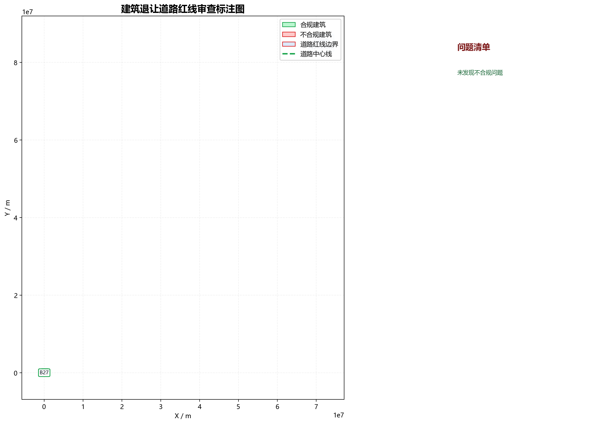

| 建筑名称 | 类型 | 高度(m) | 临接道路 | 实际让距(m) | 理论让距(m) | 判定 | 依据链 |
|---|---|---|---|---|---|---|---|
| B1 | 低层 | 0.00 | 道路5 | 110625828.61 | 5.00 | 合规 | 表3-2：20m<道路红线宽度≤40m，低层建筑，退让=5.0m；非交叉口情形 |
| B2 | 低层 | 0.00 | 道路5 | 110626110.35 | 5.00 | 合规 | 表3-2：20m<道路红线宽度≤40m，低层建筑，退让=5.0m；非交叉口情形 |
| B3 | 低层 | 0.00 | 道路5 | 110568886.66 | 5.00 | 合规 | 表3-2：20m<道路红线宽度≤40m，低层建筑，退让=5.0m；非交叉口情形 |
| B4 | 低层 | 0.00 | 道路5 | 110569168.40 | 5.00 | 合规 | 表3-2：20m<道路红线宽度≤40m，低层建筑，退让=5.0m；非交叉口情形 |
| B5 | 低层 | 0.00 | 道路5 | 110637224.94 | 5.00 | 合规 | 表3-2：20m<道路红线宽度≤40m，低层建筑，退让=5.0m；非交叉口情形 |
| B6 | 低层 | 0.00 | 道路5 | 110637563.03 | 5.00 | 合规 | 表3-2：20m<道路红线宽度≤40m，低层建筑，退让=5.0m；非交叉口情形 |
| B7 | 低层 | 0.00 | 道路5 | 110559346.22 | 5.00 | 合规 | 表3-2：20m<道路红线宽度≤40m，低层建筑，退让=5.0m；非交叉口情形 |
| B8 | 低层 | 0.00 | 道路5 | 110638217.27 | 5.00 | 合规 | 表3-2：20m<道路红线宽度≤40m，低层建筑，退让=5.0m；非交叉口情形 |
| B9 | 低层 | 0.00 | 道路5 | 110559714.98 | 5.00 | 合规 | 表3-2：20m<道路红线宽度≤40m，低层建筑，退让=5.0m；非交叉口情形 |
| B10 | 低层 | 0.00 | 道路5 | 110686221.97 | 5.00 | 合规 | 表3-2：20m<道路红线宽度≤40m，低层建筑，退让=5.0m；非交叉口情形 |
| B11 | 低层 | 0.00 | 道路5 | 110672936.96 | 5.00 | 合规 | 表3-2：20m<道路红线宽度≤40m，低层建筑，退让=5.0m；非交叉口情形 |
| B12 | 低层 | 0.00 | 道路5 | 110690354.13 | 5.00 | 合规 | 表3-2：20m<道路红线宽度≤40m，低层建筑，退让=5.0m；非交叉口情形 |
| B13 | 低层 | 0.00 | 道路5 | 110677708.32 | 5.00 | 合规 | 表3-2：20m<道路红线宽度≤40m，低层建筑，退让=5.0m；非交叉口情形 |
| B14 | 低层 | 0.00 | 道路5 | 110675739.16 | 5.00 | 合规 | 表3-2：20m<道路红线宽度≤40m，低层建筑，退让=5.0m；非交叉口情形 |
| B15 | 低层 | 0.00 | 道路5 | 110689195.98 | 5.00 | 合规 | 表3-2：20m<道路红线宽度≤40m，低层建筑，退让=5.0m；非交叉口情形 |
| B16 | 低层 | 0.00 | 道路5 | 110697586.07 | 5.00 | 合规 | 表3-2：20m<道路红线宽度≤40m，低层建筑，退让=5.0m；非交叉口情形 |
| B17 | 低层 | 0.00 | 道路5 | 110708806.05 | 5.00 | 合规 | 表3-2：20m<道路红线宽度≤40m，低层建筑，退让=5.0m；非交叉口情形 |
| B18 | 低层 | 0.00 | 道路5 | 110709370.39 | 5.00 | 合规 | 表3-2：20m<道路红线宽度≤40m，低层建筑，退让=5.0m；非交叉口情形 |
| B19 | 低层 | 0.00 | 道路5 | 110645548.11 | 5.00 | 合规 | 表3-2：20m<道路红线宽度≤40m，低层建筑，退让=5.0m；非交叉口情形 |
| B20 | 低层 | 0.00 | 道路5 | 110688577.79 | 5.00 | 合规 | 表3-2：20m<道路红线宽度≤40m，低层建筑，退让=5.0m；非交叉口情形 |
| B21 | 低层 | 0.00 | 道路5 | 110680339.11 | 5.00 | 合规 | 表3-2：20m<道路红线宽度≤40m，低层建筑，退让=5.0m；非交叉口情形 |
| B22 | 低层 | 0.00 | 道路5 | 110698426.26 | 5.00 | 合规 | 表3-2：20m<道路红线宽度≤40m，低层建筑，退让=5.0m；非交叉口情形 |
| B23 | 低层 | 0.00 | 道路5 | 110683844.93 | 5.00 | 合规 | 表3-2：20m<道路红线宽度≤40m，低层建筑，退让=5.0m；非交叉口情形 |
| B24 | 低层 | 0.00 | 道路5 | 110665423.55 | 5.00 | 合规 | 表3-2：20m<道路红线宽度≤40m，低层建筑，退让=5.0m；非交叉口情形 |
| B25 | 低层 | 0.00 | 道路5 | 110680339.11 | 5.00 | 合规 | 表3-2：20m<道路红线宽度≤40m，低层建筑，退让=5.0m；非交叉口情形 |
| B26 | 低层 | 0.00 | 道路5 | 110694235.42 | 5.00 | 合规 | 表3-2：20m<道路红线宽度≤40m，低层建筑，退让=5.0m；非交叉口情形 |
| B27 | 低层 | 0.00 | 道路5 | 110688518.51 | 5.00 | 合规 | 表3-2：20m<道路红线宽度≤40m，低层建筑，退让=5.0m；非交叉口情形 |
建筑内部仅保留短标签；绿色为合规建筑，红色为不合规建筑；道路红线为红色边界，中心线为绿色虚线，右侧为问题清单图例。

合规建筑：27 栋；不合规建筑：0 栋。
t_convert=0.7320s t_parse=0.7115s t_review=0.0036s t_render=0.4383s t_total=1.8854s